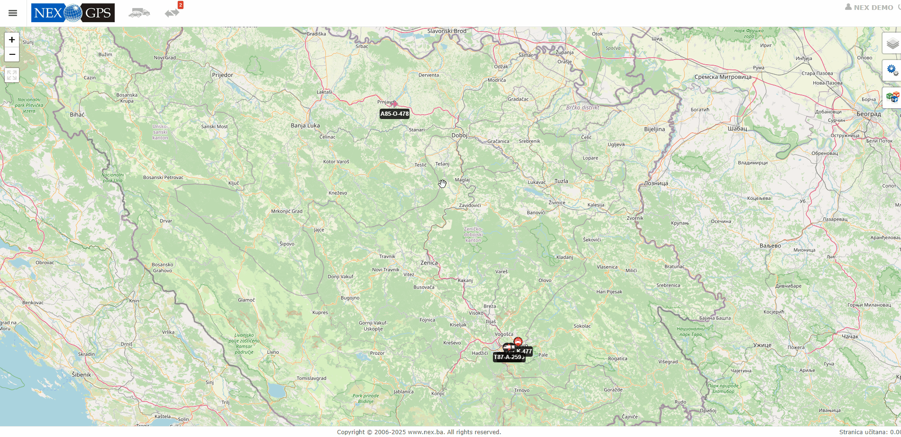

Direktni pristupni link
Da bi napravili direktni pristupni link potrebno uraditi slijedece korake:
- Otvoriti meni sa lijeve strane
- Navigirati na ikonicu vozila
- Kliknuti na opciju: Direktni Pristup vozilima
- Kliknuti na opciju: Novi direktni pristup vozilima
Kada ste kliknuli na opciju Novi direktni pristup vozilima, sve sto je potrebno jeste da odaberete jezik na kojem ce se aplikacija prikazivati, da oznacite vozila koja zelite i po zelji ogranicen vremenski dok aktivnog linka po principo datum od i datum do.
Kada ste sve to obavili potrebno kliknuti sacuvaj gdje ce se kreirati link sa vasim vozilima koji je potrebno kopirati i proslijediti kome je potrebno.
Ne otvarati link kada se napravi u istom pretrazivacu
Detaljno možete pogledati na snimku ispod
